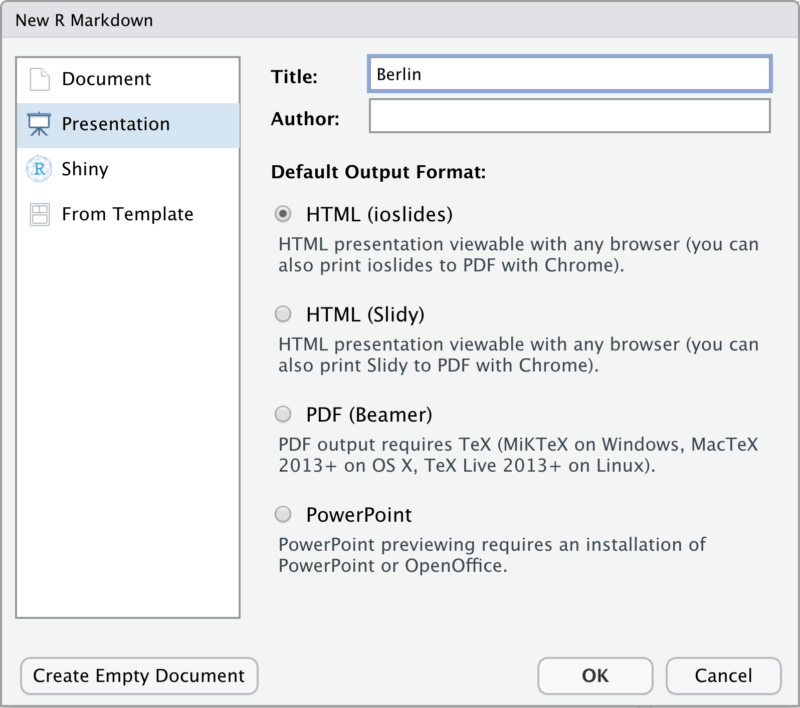

Slides
|
Reporting mit R The R Bootcamp |

|
from dvisiondesign.net
Überblick
In diesem Practical wirst aus deinem fertigen HTML RMarkdown Dokument eine Präsentation erstellen.
Am Ende des Practicals kann du:
- Eine HTML Präsentation mit
ioslideserstellen und Inhalte mit RMarkdown Code einfügen. - Ein Logo einfügen und das Layout der Präsentation anpassen.
- HTML Tags und CSS für die Feinjustierung der Slides verwenden.
Aufgaben
A - Setup
Öffne dein
TheRBootcampR Projekt. Es sollte die Ordner1_Data,2_Assets, und3_Markdownenthalten.Öffne ein neues RMarkdown Skript und wähle das Presentation - Template “HTML” aus (siehe screenshot unten).

Trage als Titel
Berlinein und drücke OK.Lösche alles unterhalb des
setupChunks.Speichere das neue Markdown Skript unter dem Namen
presentation_practical.Rmdim3_MarkdownOrdner ab.
B - YAML
Entferne die
author:unddate:Angaben aus dem YAML header (sofern diese vorliegen).Bearbeite nun den YAML Header um das Dokument allgemein anzupassen. Füge zunächst unter
title: Berlin, in einer neuen Zeile, einen Untertitel ein. Knitte das Dokument. Siehst du den Untertitel?
subtitle: "Bericht: 18/19"- Damit das Logo automatisch auf der Titelslide und in der Fusszeile jedes Slides angezeigt wird, ergänze zunächst einen Doppelpunkt hinter
ioslidesund dann darunter, eine Ebene weiter eingerückt, die Zeile unten, welche den Pfad zum Logo dem YAML Header bereitstellt. Knitte das Dokument und schaue wie R das Logo einbindet.
logo: ../2_Assets/airbnb.png- Abschliessend füge auf der selben Ebene wie das Logo die Zeile unten hinzu, welche dem YAML header den Pfad zu einer CSS Datei bereitstellt um weitere Details der Darstellung (Schrift, genaue Position der Komponenten, etc.) zu bestimmen. Einige der Änderungen betreffen Bestandteile der Slides, die erst in späteren Abschnitten erstellt werden.
css: ../2_Assets/airbnb_presentation.css- Achte darafu, dass die Einrückungen korrekt sind. Der YAML Header sollte so aussehen:
---
title: "Berlin"
subtitle: "Bericht 18/19"
output:
ioslides_presentation:
logo: ../2_Assets/airbnb.png
css: ../2_Assets/airbnb_presentation.css
---- Knitte das Dokument. Es sollte ein in den AirBnB Farben gestalteter Titelslide mit rotem AirBnB Logo angezeigt werden.
C - Setup-Chunk
Lade im
setupChunk die notwendigen Paketetidyverse,lubridate,sjPlot,knitrundkableExtra.Inkludiere im
setupChunk den folgenden Code um die AirBnB Daten zu laden und auf den Zeitraum 2018-2019 zu limitieren.
# Lade Daten
airbnb_1819 <- read_csv('../1_Data/airbnb.csv') %>%
filter(Erstellungsdatum > "2018-01-01",
Erstellungsdatum < "2019-12-31")- Ergänze weiterhin folgenden Code um die Grafikeinstellungen hinsichtlich
ggplot, wie im gestrigen Dokument, anzupassen.
# Ändere Thema zu minimal
theme_set(theme_minimal())
theme_update(panel.background = element_rect(fill = "transparent", colour = NA),
plot.background = element_rect(fill = "transparent", colour = NA),
axis.title.x = element_text(size = 16),
text = element_text(size=19))
# Setze defaults in ggplot
ggplot <- function(...) ggplot2::ggplot(...) +
scale_fill_gradientn(colors = c('#555555','#6BB7B9')) +
scale_colour_gradientn(colors = c('#555555','#6BB7B9'))D - Slides erstellen
Füge nach dem
setupChunk in einer neuen Zeile “# Neueinstellungen” ein. Damit definierst du den ersten Abschnitt mit grauem Hintergrund.Knitte das Dokument. Nach dem Titelslide sollte es jetzt einen 2. Slide mit dem Titel “Neueinstellungen” geben.
In die nächste Zeile füge “## Entwicklung” ein, was einen ersten Slide mit Inhalt beginnt.
E - Inhalte mit Bullet Points einbinden
Öffne das R Markdown Dokument, das wir gestern erstellt haben (
3_Markdown/airbnb_final.Rmd), verwende das Dokument als Quelle für Code Chunks und Text in den folgenden Abschnitten.Erstelle eine Bullet Point Liste in dem du
-vor den jeweiligen Text setzt. Übertrage aus dem Abschnitt “Entwicklung” die Anzahl der eingestellten Wohnungen als Inhalt des ersten Bullet Points. Bie Listen ist darauf zu achten, dass der erste Bullet mindestens eine Zeile Abstand zum darüberliegenden Text hat.Erstelle einen weiteren Bullet Point mit den Wohnungseinstellungen für das Jahr 2018 sowie das Jahr 2019.
Dokumentiere im dritten Bullet Point die durchschnittliche Verfügbarkeit in den nächsten 3 Monaten.
Knitte das Dokument. Sind die Bullets nun gestaffelt?
F - Grafiken einbinden
Füge einen neuen Slide ebenfalls mit dem Titel “Entwicklung” ein. Verwende zwei
#.Füge den chunk für die Abbildung 1 (Neueinstellungen pro Monat) aus dem R Markdown Dokument ein so dass die Abbildung in den Slides angezeigt wird.
Vergiss nicht in den Chunk Optionen
fig.cap = capanzugeben, damit die Bildunterschrift angezeigt wird!Knittedas Dokument. Enthält der Slide die Abbildung 1?
G - Zwei Slides zu den Stadtteilen
Füge einen neuen Slide mit dem Titel “Stadtteile” ein (zwei
#).Mit Hilfe einer HTML Tabelle (oder alternativer Methoden) erstelle ein Layout mit 2 Spalten. Liste in der linken Spalte die Stadtteile auf (mit
inlineCode) und in der rechten Spalten die prozentuellen Veränderungen.Stelle auf dem nächste Slide (gleicher Titel wie zuvor) die Abbildung 2 (Neueinstellungen pro Bezirk) als Grafik dar. Achte darauf, dass alle R Chunks (auch jene mit Berechnungen) vorhanden sind.
Knittedas Dokument. Werden die 2. Grafiken, die Bullets und die Tabelle korrekt angezeigt?
H - Deskriptive Tabelle
Erstelle einen neuen Abschnitt “Preis” und einen neuen Slide “Einfluss der Ausstattung”.
Füge einen Chunk mit dem Code zur Berechnung der Ausstattungsmerkmale ein.
Auf diesem Slide inkludiere die Tabelle mit Austattungsmerkmalen.
Auf dem gleichen Slide, unter der Tabelle, füge den letzten Satz des Abschnittes “Der Einfluss der Ausstattung” zum stark negativen Effekt der Küche ein. Füge HTML Code ein, der diesen die Schrift fett formatiert.
Knitte das Dokument. Wird die Tabelle korrekt angezeigt?
Optional: Verändere die Tabelle so, dass die Schriftgrösse in allen Zellen gleich gross ist und dass Zellen mit einer Zahl > 100 rot angezeigt werden (Hinweis:
color = ifelse(x > 100, "red", "black"))
I - Regressionsergebnisse
Füge eine neuen Slide mit dem Titel “Regressionsmodell” ein.
Kopiere den Code Chunk mit der Liste der Ausstattungsmermale und berechne damit eine Regression in der Preis, mit diesen Ausstattungsmermalen und Hotel, vorhergesagt wird.
Stelle die Ergebnisse der Regression, mit Hilfe der Funktion
tab_modelauf dem Slide dar.Inkludiere den R Chunk in dem der Anteil Hotels an allen Objekten berechnet wird.
Ergänze in fetter Schriftart den Abschlusssatz (“Der Anteil …”) unter der Regressionstabelle.
Optional: Mit dem Attribut
col.orderkannst du die Reihenfolge und Art der Ergebnisse in der Regressionstabelle festlegen. Verändere die Reihenfolge der Spalten, sodass zuerst Konfidenzintervalle (ci) und dann die Koeffizienten (est) angezeigt werden.Optional: Füge Sterne (anstatt der p-Werte) für signifikante Estimates ein (Tip:
p.style).
J - Export
Slides können je nach Inhalt mehr oder weniger gut über einen Browser als PDF ausgegeben werden. Öffne hierzu die durch das Knitten erzeugte
.htmlDatei in einem Browser (z.B., Chrome).Dann drücke
Cmd + PoderCtrl + Pum das Druckmenu zu öffnen wo du PDF als Output auswählen musst.Speichere das PDF auf deine Festplatte und schaue ob alles angemessen ausgegeben wurde.
Datensatz
Der airbnb.csv Datensatz enthält Zahlen zu 9868 Berliner Airbnbs
| Variable | Beschreibung |
|---|---|
| Preis | Preis pro Nacht |
| Erstellungsdatum | Eröffnungsdatum des Airbnbs |
| Unterkunftsart | Appartement, Loft, House, etc. |
| Schlafplätze | Anzahl Schlafplätze |
| Schlafzimmer | Anzahl Schlafzimmer |
| Badezimmer | Anzahl Badezimmer |
| Reinigungsgebühr | Reinigungsgebühr |
| Verfügbarkeit_90Tage | |
| Viertel | In welchem Viertel befindet sich das Airbnb |
| Stadtteil | In welchem Stadtteil befindet sich das Airbnb |
| Breitengrad | Breitengrad |
| Längengrad | Längengrad |
| Host_id | Host id |
| Host_seit | Erfahrung des Hosts |
| Host_antwortzeit | Host Antwortzeit |
| Host_antwortrate | Host Antwortrate |
| Host_superhost | Superhost Ja/Nein |
| Host_anzahl | Anzahl Gäste |
| Rating_gesamt | Gesamtrating |
| Rating_genauigkeit | Genauigkeitsrating |
| Rating_sauberkeit | Sauberkeitsrating |
| Rating_checkin | Checkinrating |
| Rating_kommunikation | Kommunikationsrating |
| Rating_lage | Lagerating |
| Rating_wertigkeit | Wertigkeitsrating |
| Küche | Küche vorhanden TRUE/FALSE |
| Wifi | WLAN vorhanden TRUE/FALSE |
| TV | TV vorhanden TRUE/FALSE |
| Kaffeemaschine | Kaffeemaschine vorhanden TRUE/FALSE |
| Geschirrspüler | Geschirrspüler vorhanden TRUE/FALSE |
| Terrasse_Balkon | Terrasse/Balkon vorhanden TRUE/FALSE |
| Badewanne | Badewanne vorhanden TRUE/FALSE |
| Check_in_24h | 24h Check-In vorhanden TRUE/FALSE |
Funktionen
Pakete
| Paket | Installation |
|---|---|
tidyverse |
install.packages("tidyverse") |
lubridate |
install.packages("tidyverse") |
knitr |
install.packages("knitr") |
sjPlot |
install.packages("sjPlot") |
kabelExtra |
install.packages("kableExtra") |
Materialien
- HTML Referenz
- CSS Referenz
- DIE Referenz für RMarkdown bis ins letzte Detail.
- Rmarkdown Dokumentation und Befehlsreferenz.